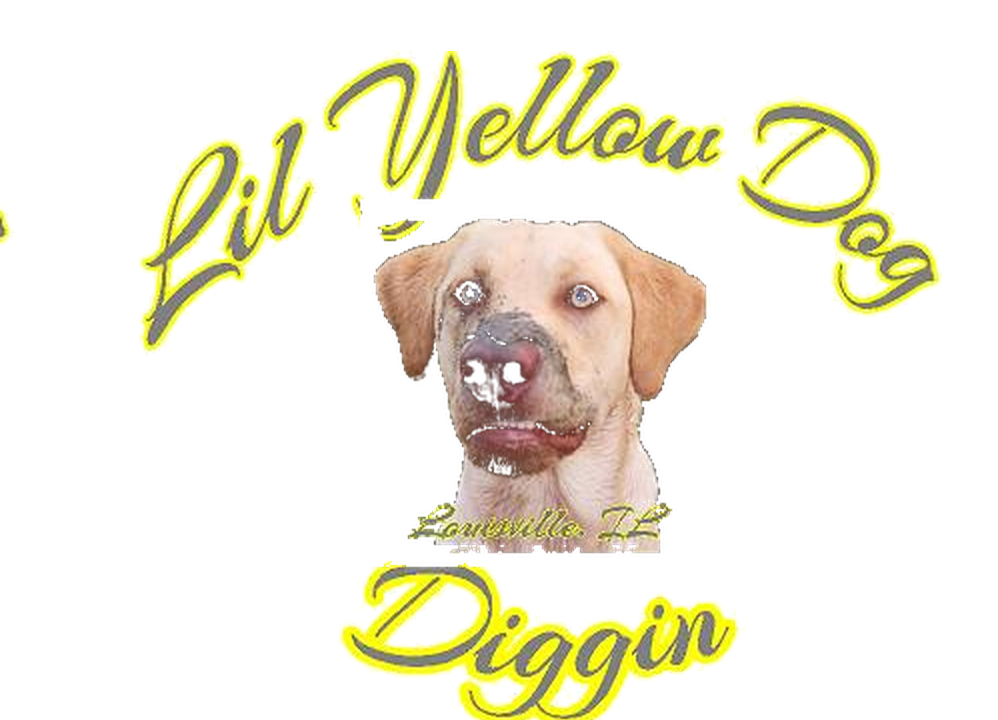
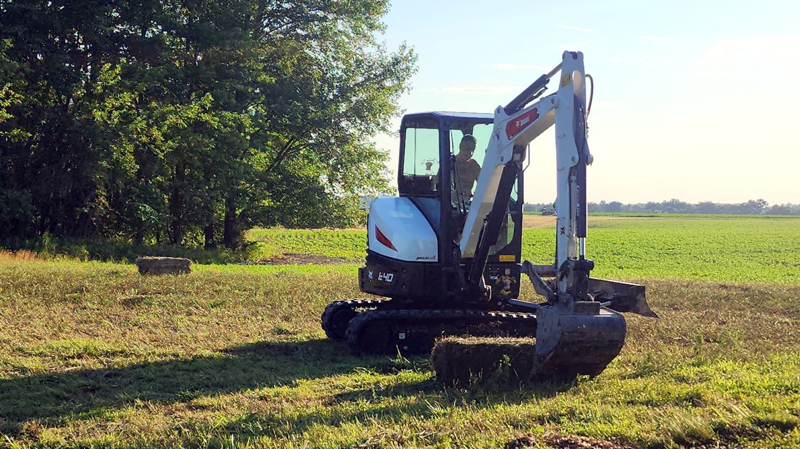
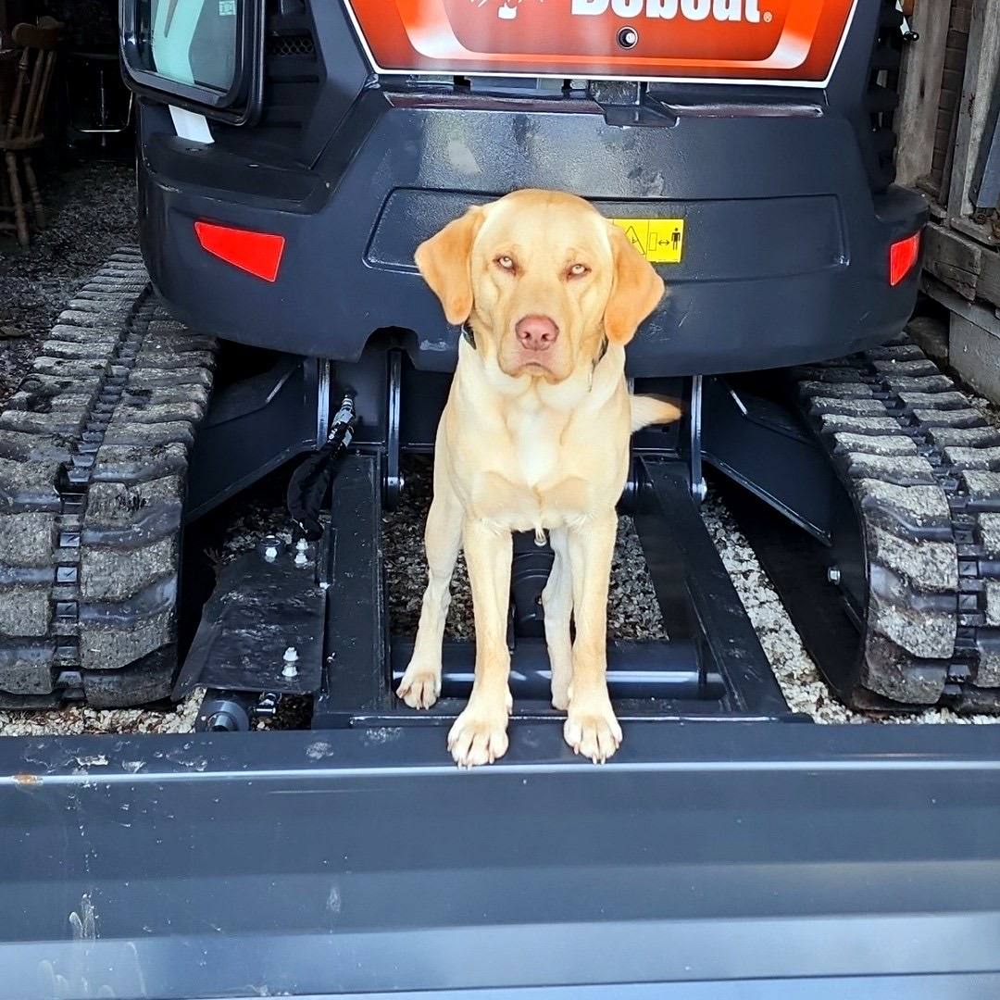

Mini Excavation
Drainage corrections, light trenching, culvert prep, stump-area cleanup, and other compact dirt work for properties that need practical results.

Lil Yellow Dog Diggin’ Land Management
Mini excavation • Brush clearing • Driveway grading
Lil Yellow Dog Diggin helps property owners improve access, clean up overgrowth, and handle small to mid-size land projects with compact equipment and practical planning.
From pond edges and fence lines to driveways and rough ground, the goal is simple: leave the property cleaner, easier to use, and easier to maintain.
Built for acreage, trails, drives, and fence lines
From reclaiming overgrown areas to smoothing out a washed driveway, every job is focused on useful improvements that make rural property easier to access, maintain, and enjoy.
Drainage corrections, light trenching, culvert prep, stump-area cleanup, and other compact dirt work for properties that need practical results.
Fence rows, field edges, trails, and overgrown areas cleared back into manageable, maintainable space.
Leveling, gravel shaping, rut repair, and drainage improvements that help rural driveways hold up better over time.

See the work
The gallery highlights completed work, before-and-after results, and site photos that show the kind of projects Lil Yellow Dog Diggin takes on.
See the evidencePart of the same brand family
Big Yellow Dog Truckin has its own page as part of the same YellowDog.lol family, with photos and business information for the trucking side of the operation.
Need a property cleanup quote?